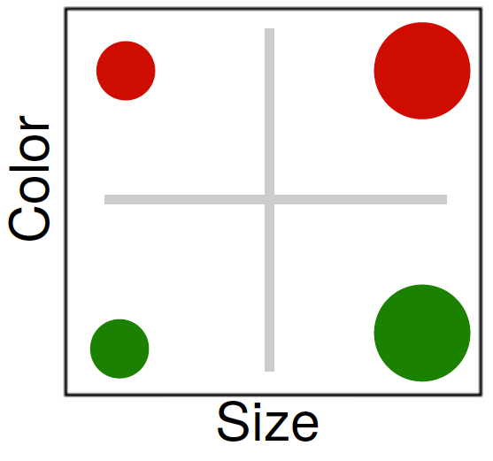
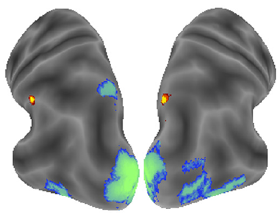
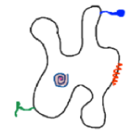
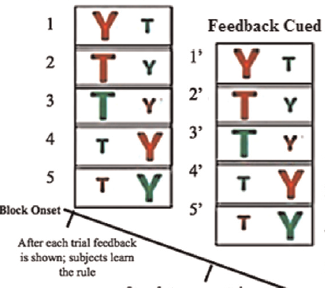
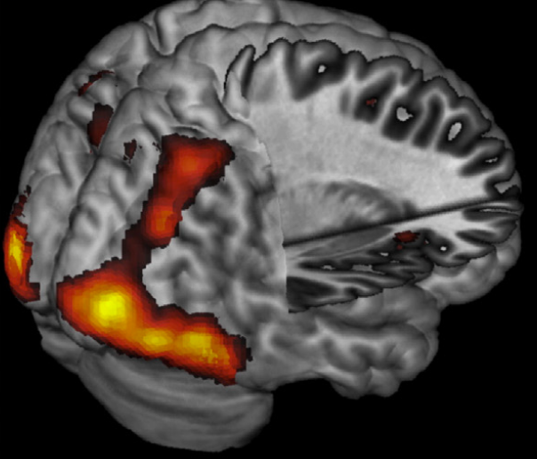
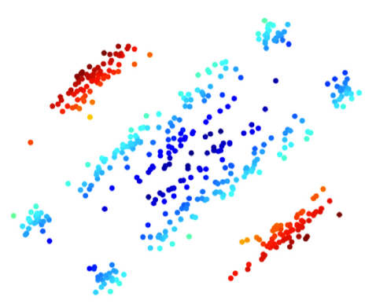
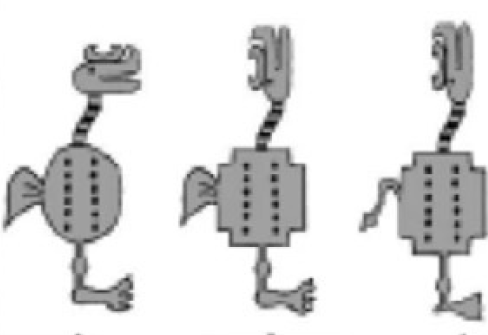
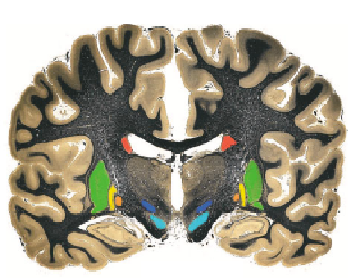
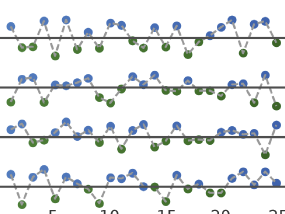

|
Kurt Braunlich
About
I'm a research associate working with Brad Love at the University College London. I'm broadly interested in how we organize information from the external environment, and how we use that information to make decisions. More specifically, I combine neuroimaging (primarily fMRI), cognitive modeling, and modern “machine-learning” approaches to better understand how knowledge about specific concepts interact with our current goals
neural representations reflect learned concepts, and are modulated by our current goals.
In the past, I have worked with Mark Wheeler at the Georgia Institute of Technology, and with Carol Seger at Colorado State University, where I completed my Ph.D.
Publications
|
 |
Occipitotemporal Representations Reflect Individual Differences in Conceptual Knowledge.
Braunlich, K. & Love, B. C. (in press). Journal of Experimental Psychology: General. (pdf)
We link brain, behavior, and classic cognitive theory by demonstrating that occipitotemporal representations of individual stimulus dimensions are embedded within an attentionally-modulated space closely resembling that conceptualized by classic categorization models.
|
|
 |
Occipitotemporal Category Representations are Sensitive to Abstract Category Boundaries Defined by Generalization Demands.
Braunlich, K., Liu, Z., & Seger, C. A. (2017). The Journal of Neuroscience. (pdf)
The ability to generalize knowledge to novel situations is a fundamental cognitive capacity. Using a task in which participants categorized stimuli according to “strict” and “lax” generalization rules, we investigated whether occipitotemporal representations reflect generalization demands.
|
|
 |
Categorical Evidence, Confidence and Urgency During Probabilistic Categorization.
Braunlich, K., & Seger, C. A. (2016). NeuroImage. (pdf)
Real-world decisions evolve across time, and require decision to keep track of multiple variables.
Using a temporally-extended categorization task, we tracked the temporal evolution of three important neural signals: categorical evidence, normative decision confidence, and monotonically-ramping “evidence independent” signals, which are thought to reflect temporal demands on decisional processes.
|
|
 |
Neural Networks Supporting Switching, Hypothesis Testing, and Rule Application.
Liu, Z., Braunlich, K., Wehe, H. S., & Seger, C. A. (2015). Neuropsychologia. (pdf)
Using constrained principal component analysis, we investigated how multiple networks contribute to task switching, hypothesis-testing and rule application.
|
|
 |
Frontoparietal Networks Involved in Categorization and Item Working Memory.
Braunlich, K., Gomez-Lavin, J., & Seger, C. A. (2015). NeuroImage. (pdf)
Categorization and object-identification are fundamental cognitive capacities which allow decision-makers to apply learned knowledge to novel situations. Using a multivariate connectivity analysis, we identify multiple networks involved in the performance of these tasks, and investigate how these networks were recruited during their performance.
|
|
 |
Generalization in Category Learning: The Roles of Representational and Decisional Uncertainty.
Seger, C. A., Braunlich, K., Wehe, H., & Liu, Z. (2015). The Journal of Neuroscience. (pdf)
During perceptual categorization, both within- and between-category variance can influence behavioral performance. Using model-based fMRI, we investigated neural signals reflecting distance from a learned category prototype to novel regions of perceptual space (within category variance), and signals reflecting distance from a linear decision boundary (between category variance).
|
|
 |
Category Learning.
Seger, C. A., & Braunlich, K. (2015). In A. W. Toga (Ed.), Human Brain Mapping: An Encyclopedic Reference. Elsevier Inc. (pdf)
Stimuli can be sorted into categories using a variety of strategies. In this review, we discuss how multiple neural systems are thought to cooperate and compete during the performance of different categorization tasks.
|
|
 |
The Basal Ganglia.
Braunlich, K., & Seger, C. A. (2012). Wiley Interdisciplinary Reviews: Cognitive Science. (pdf)
The basal ganglia are anatomically well-positioned to modulate activity across the brain. In this review, we discuss the importance of the basal ganglia in instrumental learning, cognitive control, sequence learning, and categorization. To illustrate the relationship between the basal ganglia and
cognitive function, we discuss the neurobiological and cognitive characteristics of Parkinson’s disease, Huntington’s disease and addiction.
|
Recent Presentations
|
 |
Occipitotemporal representations are modulated by conceptual knowledge and interact with a frontoparietal network.
Braunlich, K., & Love, B. C. (2017). Paper presented at the Cognitive Computational Neuroscience Annual Meeting. (pdf)
Building on the attentional effects reported in Braunlich & Love (2018) we use a novel connectivity analysis to identify regions of the brain involved in reading-out, or modulating, the strength of these occipitotemporal stimulus feature representations. We demonstrate that regions of the bilateral intraparietal sulcus closely predict (in a cross-validated sense) the strength of these representations on a trial-by-trial basis. Frontal regions, in turn, predict the strength of these intraparietal representations.
|
|